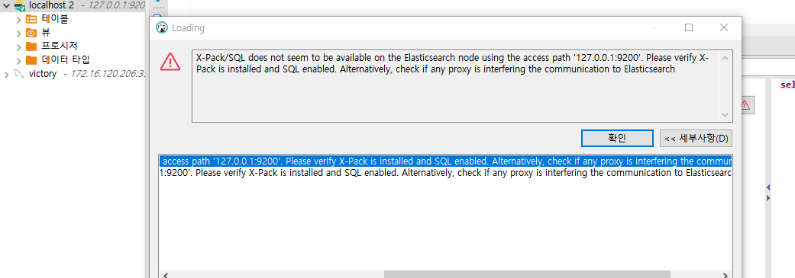

Connect to Elasticsearch in DBeaver
2022, Mar 29
dbeaver elasticsearch
dbeaver에서 elasticsearch 연결
dbeaver에 es 용 버전별 driver 추가하고 설정하면
test connection error
test connection도 실패나서 원인을 찾던 중
user legacy jdbc instantiation 체크를 해제하라고 해서 해제하고 하니 잘됨
X-Pack/SQL does not seem to be available on the Elasticsearch node using the access path ‘127.0.0.1:9200’
하지만 막상 쿼리 조회를 하면 아래 에러 로그발생

try…
에러내용은 elasticsearch에 x-pack 설치되어야한다고 함
(https://www.elastic.co/guide/kr/x-pack/current/installing-xpack.html)
sh-4.2# cd /usr/share
sh-4.2# ls
X11 centos-release empty glib-2.0 licenses misc redhat-release xsessions
aclocal cracklib file gnome locale omf sounds yum-cli
applications dbus-1 games gnupg lua p11-kit systemd yum-plugins
augeas desktop-directories gcc-4.8.2 i18n magic pixmaps systemtap zoneinfo
awk dict gcc-4.8.5 icons man pkgconfig tabset zsh
backgrounds doc gdb idl mime pki terminfo
bash-completion elasticsearch ghostscript info mime-info polkit-1 themes
sh-4.2# cd elasticsearch/
sh-4.2# cd bin
sh-4.2# cd elasticsearch-plugin
sh: cd: elasticsearch-plugin: Not a directory
sh-4.2# ls
elasticsearch elasticsearch-env elasticsearch-keystore elasticsearch-plugin
elasticsearch-cli elasticsearch-env-from-file elasticsearch-node elasticsearch-shard
sh-4.2#
sh-4.2#
sh-4.2# elasticsearch-plugin install x-pack
-> Installing x-pack
-> Failed installing x-pack
ERROR: X-Pack is not available with the oss distribution; to use X-Pack features use the default distribution
docker로 했더니 실패했습니다.
그 이유는
x-pack은 oss버전에서 불가능하다고 합니다.
default distribution버전을 사용하라고 하네요.